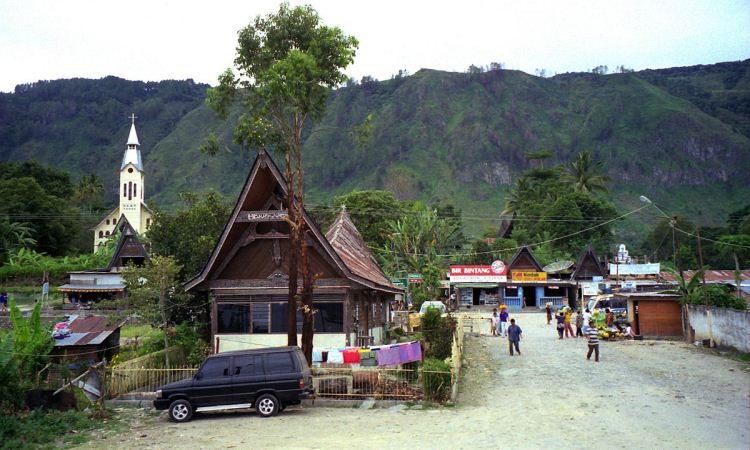

Kabupaten Samosir
Pulau Samosir adalah sebuah pulau vulkanik di tengah Danau Toba di provinsi Sumatra Utara. Sebuah pulau dalam pulau dengan ketinggian 1.000 meter di atas permukaan laut menjadikan pulau ini menjadi sebuah pulau yang menarik perhatian para turis. Tuktuk adalah pusat konsentrasi turis di Pulau Samosir.
Air Terjun Sampuran Efrata

Image Credit: Visitsamosir.com
Wisata air terjun yang tidak boleh terlewatkan saat berkunjung ke Samosir, yaitu air terjun Sampuran
Efrata. Lokasi ini
sering digunakan menjadi lokasi berkemah karena keindahan alamnya. Pengunjung dapat merasakan
kesegaran pancuran air
terjun sambil berenang maupun bersantai memandangi ke elokan tebing di sekitar air terjun yang
seperti dipahat bersama
teman perjalanan. Anda bisa mengunjungi air terjun ini setiap hari dari jam 6 pagi sampai dengan jam
7 malam.
Lokasi
Lokasi: Sosor Dolok, Harian, Sosor Dolok, Kec. Harian, Kab. Samosir, Sumatera Utara.
Desa Tomok
Image Credit: Wikipedia.org
Bagi anda yang ingin belajar kebudayaan Batak, desa ini merupakan salah satu destinasi wajib dalam
list perjalanan anda.
Adat dan kebudayaan Batak yang masih terjaga menjadikan desa ini memiliki daya tarik tersendiri bagi
wisatawan. Berada
pada tepian Danau Toba, desa ini memiliki panorama yang indah. Anda dapat memandang bentang luas air
Danau Toba yang
kebiruan sambil bercengkerama dengan partner travelling anda.
Banyak tempat yang bisa anda kunjungi Selama berada di Desa Tomok. Anda bisa berbelanja souvenir
khas daerah tersebut
mulai dari kain ulos, gantungan kunci maupun cinderamata yang lain. Selain itu anda juga dapat
mengunjungi makan
raja-raja Batak jaman dahulu serta mengunjungi museum Batak Tomok untuk lebih mengenal kebudayaan
Batak.
Lokasi
Lokasi:Tomok, Kec. Simanindo, Kab. Samosir, Sematera Utara.